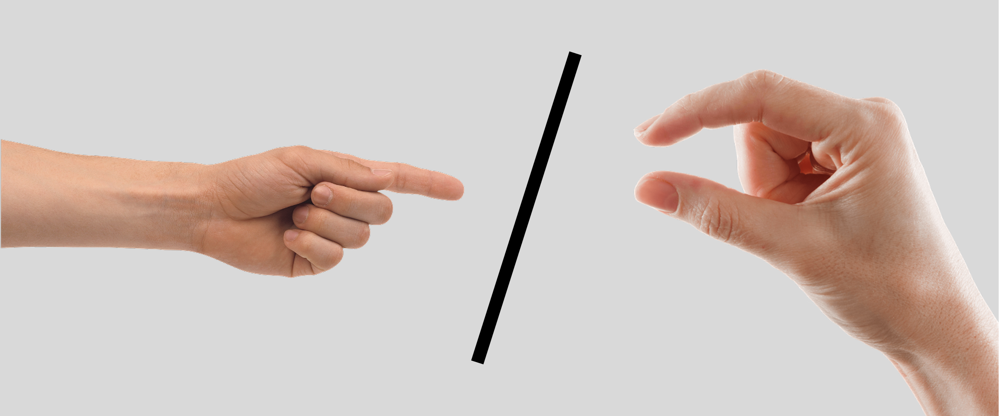
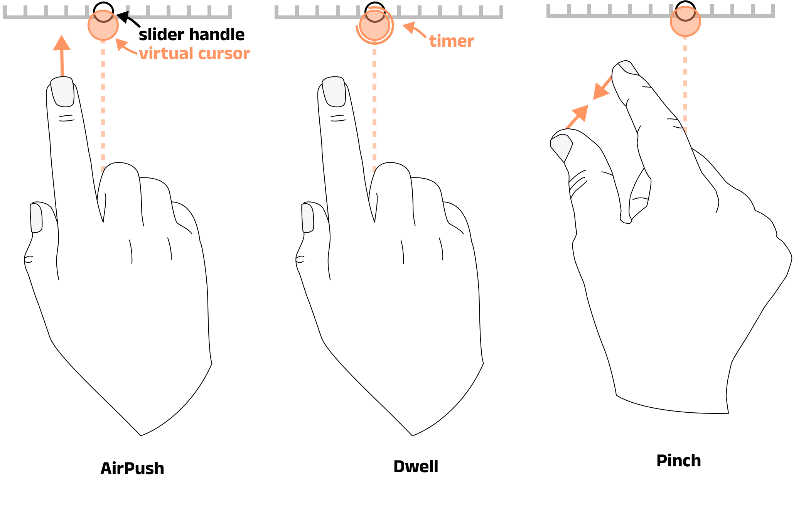
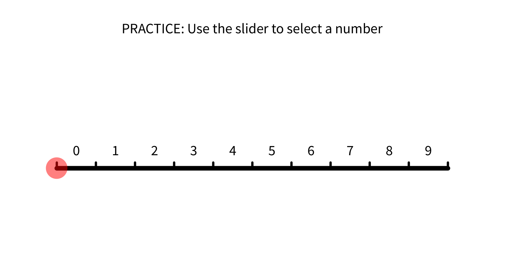
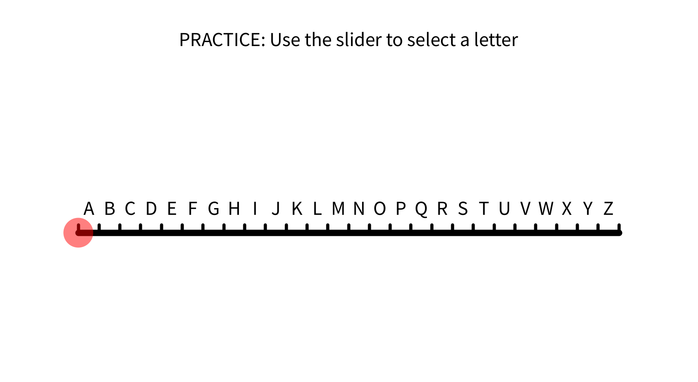
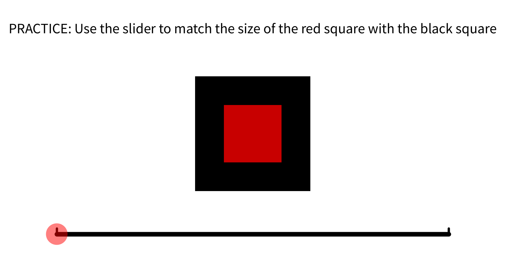
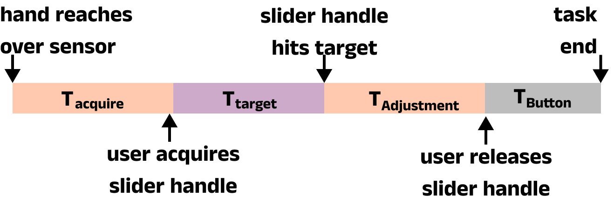

Push or Pinch? - Touchless Selection Gestures
A formative study to find the best gesture for touchless control

Overview: The Problem & Solution
Touchless systems commonly use the 'AirPush' (pushing a hand/finger forward in mid-air) gesture to make selections in mid-air. While this works well for simple buttons, it is trickier to maintain this active state over continuous movements, such as slider bars or scrolling. Users struggle to keep their hand at a consistent depth, leading to errors and frustration.
The Problem: Can we find a better method for activating widgets on a mid-air interface that doesn't rely on ambiguous depth.
The Solution: I designed and conducted a user study to compare the AirPush gesture with alternative gestures that do not require depth for activation. I tested both Dwell-based activation and pinch gestures to determine if removing the aspect of depth can increase targeting confidence and, in turn, improve accuracy, increase interaction speed and user satisfaction. I further tested a variant of pinch allowing the user to ‘pinch from anywhere’ akin to a dynamic area cursor. This allowed us to test the viability of the pinch gesture without strict tracking constraints focussing solely on the pinch dynamic.

My Role:
As the lead researcher and designer for this project, I was responsible for:
- Interaction Design: Proposing and defining the interaction gestures and their interaction logic.
- Software Prototyping: Building the test software in Java, using a Leap Motion Controller.
- User Research: Designing and executing the formal user study.
- Data Analysis: Statistically analysing all quantitative data and coding qualitative feedback.
- Publication: Writing and publishing the findings at an international conference.
The Process: A User-Centred Evaluation
This project was a direct comparison to find the best-performing interaction technique. It was therefore important to test each technique across a variatey of tasks at different precision levels. This provided an understanding of how users made selections (correctly or not) acorss a a range of difficulties.
- Task 1 (Digit): Select a number from 0-9. This was the easiest task in the set.
- Task 2 (Alphabetic): Select a letter from A-Z. This required a greater precision with smaller gaps for error. Simulates filtering a list, such as destinations on a ticket machine.
- Task 3 (Scale): Match the size of a red square to a black one. This tasks requires high precision testing each interaction techniques ability to 'grab' and 'release' accurately.



Across both experiments, to measure usability, I collected a mix of quantitative and qualitative data:
- Quantitative Metrics: In order to fully understand the interaction flow, I mapped out a typical user interaction (for a slider). This created a basis for evaluating performance based on quantitative metrics: Task completion time, time to acquire a target, time for adjustment and selection accuracy.

- Qualitative Metrics: Subjective workload was measured using the NASA-TLX survey. I also conducted semi-structured interviews and gathered user preferences.
Outcomes
Pinching Was Faster: Pinch gestures proved to be a significantly faster "mode switch" for acquiring control of the slider handle. Both pinch techniques were faster for acquisition than the standard Air Push and Dwell methods.
Pinching Was Preferred: Users strongly preferred the pinch gesture.
The UX Insight: Qualitative feedback from users revealed why pinching was preferred. Pinching has two clearly defined states (open and closed) and avoids the ambiguous forward push motion, which some users found "frustrating". This gave them a greater sense of control and confidence.
The Potential of Area Cursors: The pinch from anywhere variant of pinch was included to test a best case scenario verison of pinch (where tracking is not an issue). However, it proved to to be the most preferred, fastest and most accurate control method. This opens up the possibilty of dynamic area cursor for spatial interafces, which I further explore here.
This research was accepted and published at the 2023 ACM Symposium on Spatial User Interaction (SUI '23).
Back to all projects